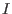
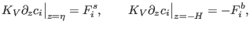
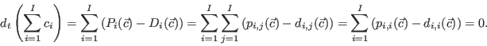
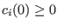
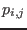
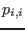
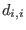
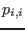
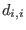

Next: Numerical aspects Up: Biogeochemical models Previous: Biogeochemical models Contents
The general structure of a biogeochemical model with  state variables expressed as ensemble averaged concentrations is given by the following set of equations:
The gradient term on the left hand side of (265) is the total transport, for which typically surface and bottom boundary conditions
|  | (266) |
We basically consider two types of ecosystem models.
In the simple NPZ (nutrient-phytoplankton-zooplankton) type models
all state variables are based on the same measurable unit
such as [mmol N m ] for nitrogen-based models.
In such NPZ models the reactive terms do only exchange mass
between state variables with
] for nitrogen-based models.
In such NPZ models the reactive terms do only exchange mass
between state variables with
|  | (269) |
In many biogeochemical models most state variables are known to be positive or at least non-negative quantities. For non-negative initial conditions  one can easily show by a simple contradiction argument that the condition
However, for many applications such simple models are
too restrictive. Often different spatial references
are involved for the state variables, such as the
detritus concentration in the water column, measured in [mmol N m ]
and the fluff layer concentration at the bed, measured in [mmol N m
]
and the fluff layer concentration at the bed, measured in [mmol N m ].
Many biogeochemical processes
involve more than two substances such as the photosynthesis
where different nutrients (e.g. nitrate and phosphorus) are taken
up by phytoplankta and oxygen is produced. The ratios between these
substances dissipated or produced are usually fixed, in the example
of photosynthesis uptake of 16 mmol m
].
Many biogeochemical processes
involve more than two substances such as the photosynthesis
where different nutrients (e.g. nitrate and phosphorus) are taken
up by phytoplankta and oxygen is produced. The ratios between these
substances dissipated or produced are usually fixed, in the example
of photosynthesis uptake of 16 mmol m nitrate is
connected to an uptake of 1 mmol m
nitrate is
connected to an uptake of 1 mmol m phosphorus
and a production of 8.125 mmol m
phosphorus
and a production of 8.125 mmol m oxygen.
oxygen.
For state variables which may
be negative (such as oxygen concentration
which also includes oxygen demand units,
all sink and source
terms are added up in the production terms
, with a negative sign for the sink terms.
For the Neumann et al. (2002) model discussed in sections
 ,
further deviations from the conservation formulation are introduced since
biogeochemical reactions include substances which are not budgeted by the
model (mostly because they are assumed to be not limiting).
One typical example is nitrogen fixated by blue-green algae which
builds up biomass by using atmospheric nitrogen which is later recycled to
nitrate. Such non-conservative terms are lumped into the diagonal terms
 and .
,
further deviations from the conservation formulation are introduced since
biogeochemical reactions include substances which are not budgeted by the
model (mostly because they are assumed to be not limiting).
One typical example is nitrogen fixated by blue-green algae which
builds up biomass by using atmospheric nitrogen which is later recycled to
nitrate. Such non-conservative terms are lumped into the diagonal terms
 and .
Karsten Bolding 2012-12-28